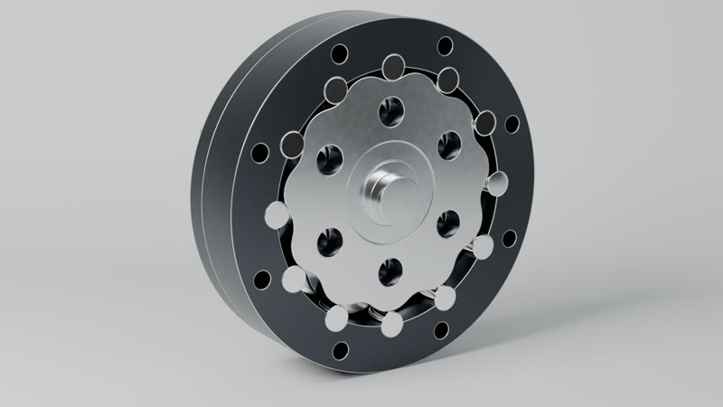
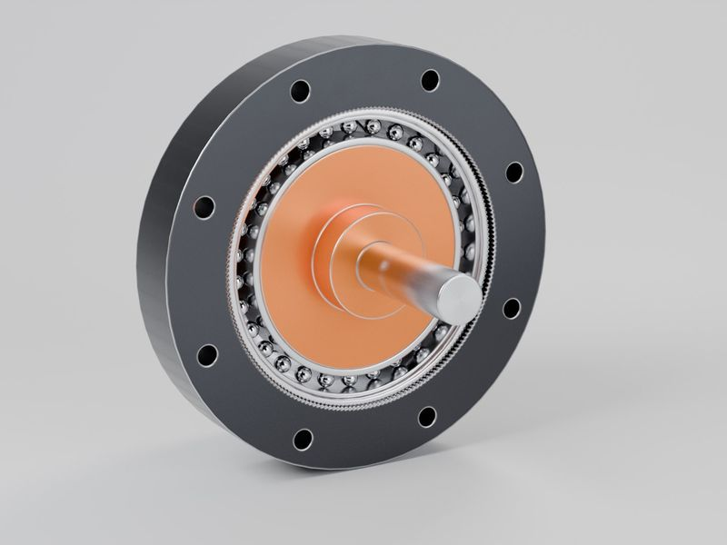
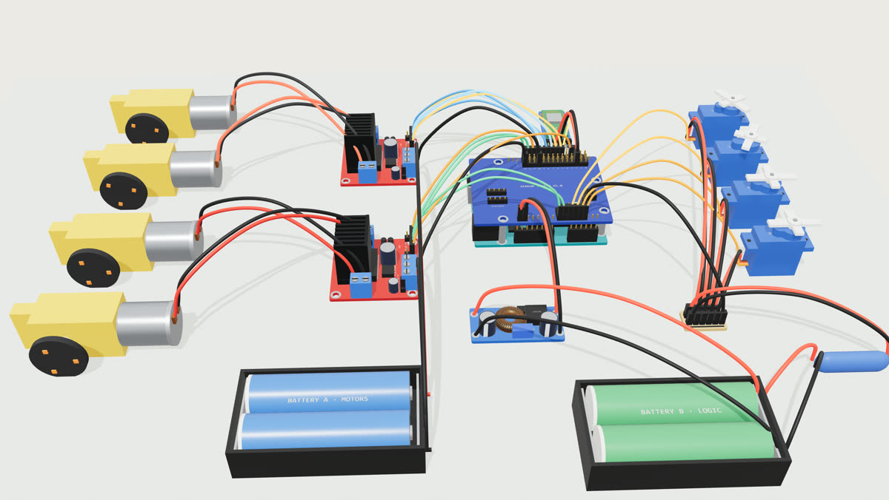
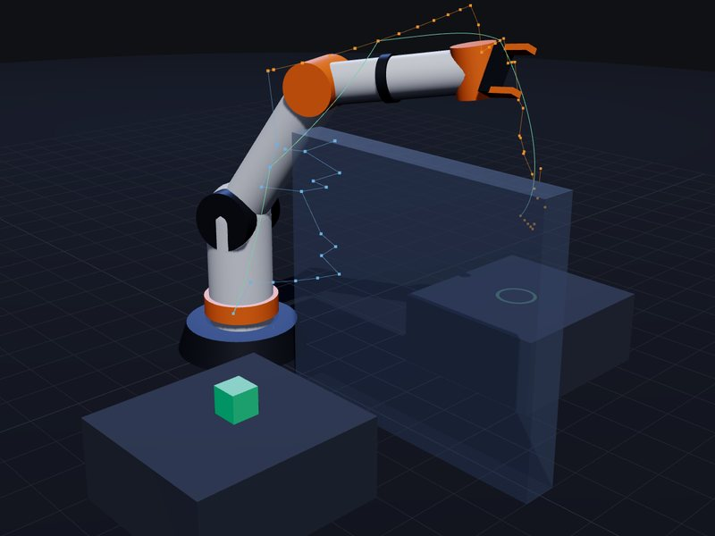
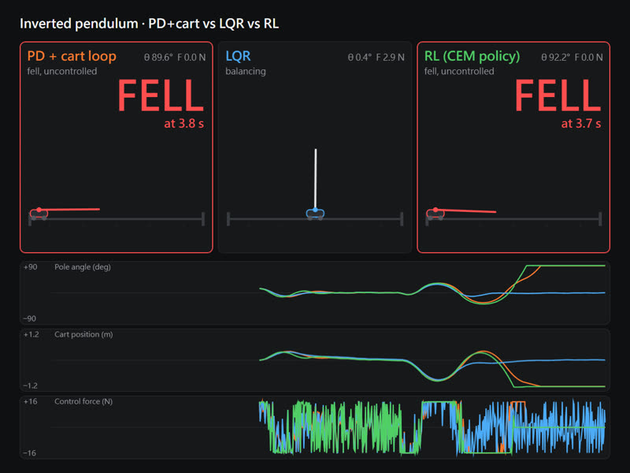
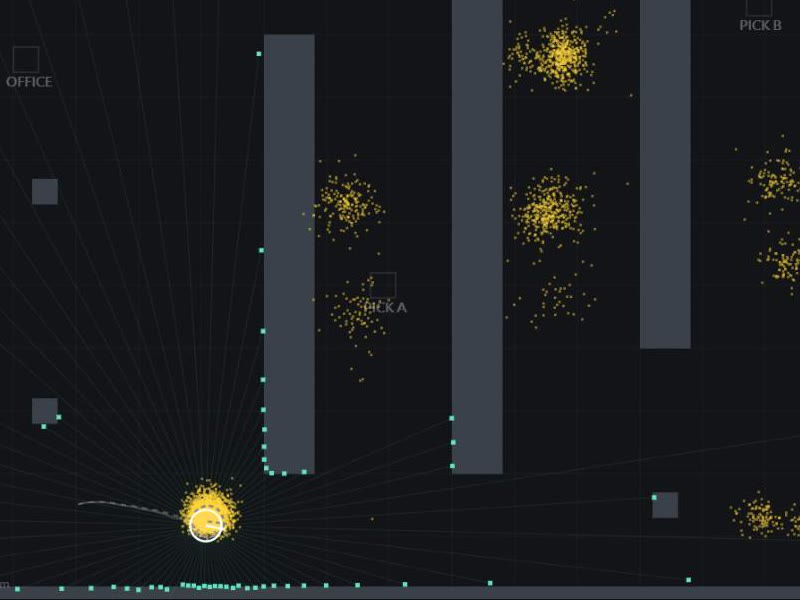
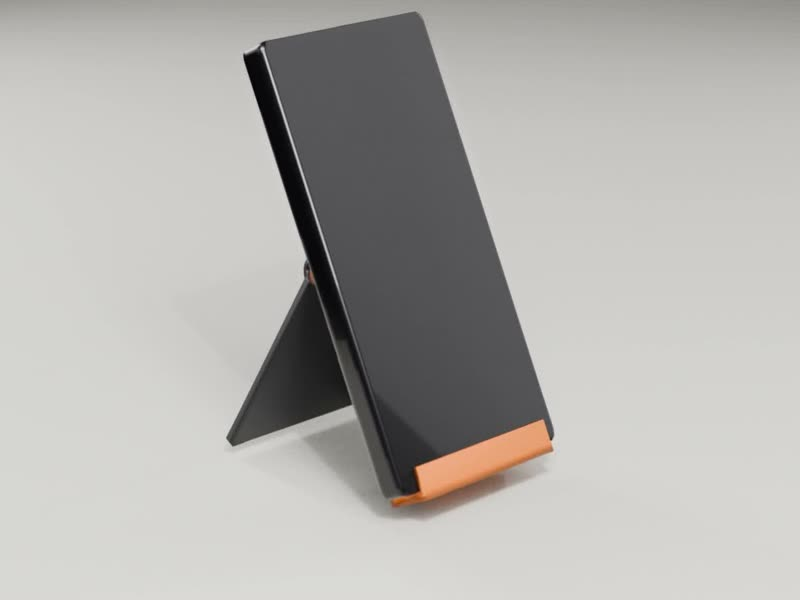

CD-11 cycloidal reducer · 擺線減速機
11:1 single stage. STEP, drawings, pin-force and bearing-life analysis, renders, interactive teardown, a 30-second product film and a 41-second tour.
Try: press EXPLODE to pull it apart, drag to turn it.

SW-100 strain wave gear · 諧波減速機
The robot-joint gearbox: a flexing toothed cup gives 100:1 in one stage.
Try: press EXPLODE.

Eight-legged pick-up robot + EV3 · 八足取物機器人
University capstone (team lead, electronics and control). Interactive simulation driven by the real command protocol, a 30-second product film rendered from the simulation, and a 44-second tour.
Try: press F to walk, D to lower the arm, or Cut link to cut the wireless link.

Pick-up robot electronics · 取物機器人電控接線
The same robot's real wiring, every board built in code. Send its commands and watch each pin respond.
Try: hold F, then switch on a wiring mistake.
Robotics, control and 3D printing · 機器人、控制與 3D 列印

6-DOF arm: IK and motion planning · 六軸手臂逆運動學與路徑規劃
The arm finds its own collision-free path over a wall.
Try: drag the target, then press Plan.

Inverted pendulum: PD vs LQR vs RL · 倒單擺控制比較
Three controllers balance the same pole; hard cases show where each one fails.
Try: press Hard case.

Warehouse robot: localization and planning · 倉儲機器人定位與路徑規劃
The robot works out where it is from its laser scans, then drives itself to the goal.
Try: Kidnap robot.

Print-in-place folding stand · 可列印折疊支架
Type in your phone size; get a checked, ready-to-print STL.
Try: Download STL.